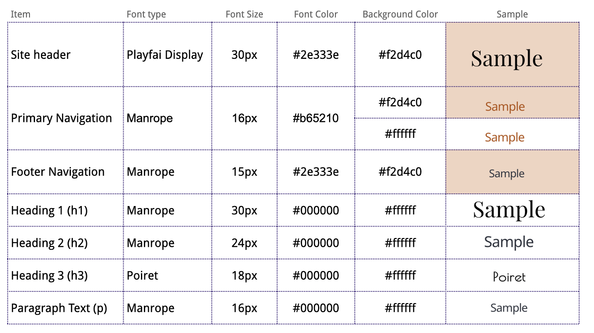
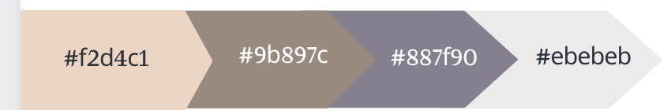
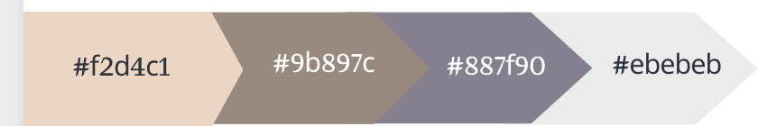

Color Scheme & Typography
The primary text fonts are Playfair Display and Manrope. For emphasis on certain titles or groups of text, Poiret could be used. See chart below for color scheme and typography details.

Additional background colors
The primary text fonts are Playfair Display and Manrope. For emphasis on certain titles or groups of text, Poiret could be used. See chart below for color scheme and typography details.
Additional background colors
